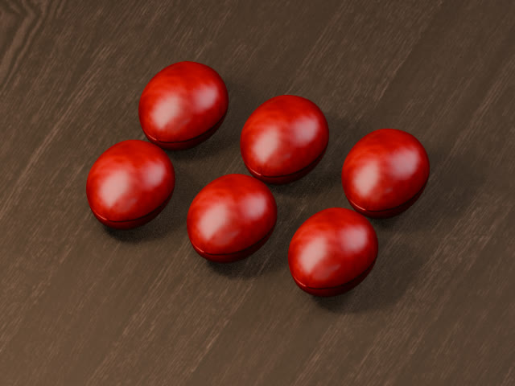

水面之内 · 制作审查

以已有36秒研究样片为输入，逐镜查看原作、局部、转译与转场，定位实际编码画面并记录观看笔记。
本次新增审查与复现工具，没有新成片。技术检查不决定艺术质量，003仍待观看反馈、未获认可。
打开逐镜审查从山水、版画到抽象与当下的精神经验。
一条选择性的艺术路径，而非完整的世界艺术史。
创作要求整理版 · 非逐字原文
已按后续修订移除取消的片尾署名要求
第一集 · 先别承诺
青年男声与电子机器人声的双角色短剧。对白重新决定剪辑节奏，嘴形随声音强弱开合。
当前为有限动画试播：合成配音、机器人声码器处理与音画编排。没有把声音驱动的嘴形开合当作专业角色动画。
下载配音版 3.6 MB源码库含完整配音、五个后续提案与第二集剧本；第二集制作中，24秒动作样段见下方试看区。

从咖啡果到拿铁：连续原理影片、可旋转三维物件与分层工艺说明。
教学可视化，材料与过程经过简化；不是生产参数或真实物理仿真。
进入咖啡之旅
进入可探索的海底空间，观察珊瑚形态、空间层次与水下材质。
当前公开版本 db1f921，整体视觉仍未达标，继续改进中。效果随设备与浏览器变化；不是海域的完整科学重建。
进入海底空间产品入口仍保留登录与访问权限；公开源码不开放账户或后端访问。
新增历史快照对比界面，已部署到受限原型。现阶段只有一份真实基线。
100条真实基线，历史对比功能不等于已有第二期数据；尚无可成立的跨期变化结论。
打开受限原型 · 查看源码探索设备发现、信令与会话状态，显式记录失败和恢复过程。
既有验证限同一Linux环境两个Chromium实例。取消与重传修复正在进行；iPad、跨网络与生产登录尚未验收。
打开受限原型 · 查看源码在同一讨论里组织不同角色视角，形成可追问的决策过程。
既有14项检查使用模拟响应，另有5次真实MiniMax调用。新增参考对话追溯已部署，待界面验收；不代表生产模型端到端验证。
打开受限原型 · 查看源码系列从艺术的起始词延展。先找到材料、色彩、运动与声音的关系，让作品的含义在观看中生长。
可以是安静，也可以是紧张、炽烈或陌生。首片是一种可能，后续作品不必重复它的历史结构或情绪。
当前收录：001 完整成片
后续艺术作品仍在发展；003仅进入独立制作审查区，不列为认可成片。
《观看的重量》采用大都会博物馆标为Public Domain的四件馆藏图像，依其Open Access / CC0政策使用。原作不重新署名，博物馆与艺术家不为本项目背书。
末章匿名肖像为OpenAI图像生成；原创程序动画与合成声景。蒙德里安仅用于研究，未使用其受限馆藏图像。短剧使用合成配音、原创虚构角色与合成音乐音效。
公开展示不代表对所有素材授予统一开源许可。第三方材料遵循各自的使用条件。